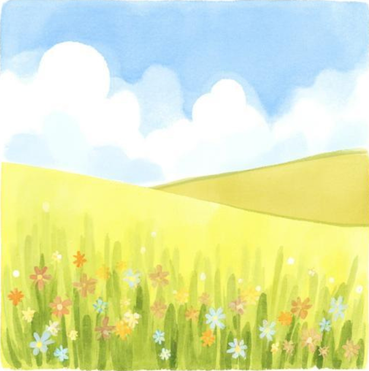

Designed and built by Delroy Barnies
ARE YOU IN YOUR LEAH SEASON?

Did you know Jacob was buried with Leah, not Rachel?
Not the woman he loved. Not the one he cried for.
Not the one he labored fourteen years to have.
Leah.
In Genesis 49:29–31, when Jacob was about to die, he gave a clear instruction:
“Bury me… in the cave… where Abraham and Sarah are… Isaac and Rebekah… and there I buried Leah.”
Pause.
Rachel was his passion. Leah was his alignment. Rachel was the love story.
Leah was the covenant story. Rachel had her emotions.
Leah carried the promise. Rachel was buried on the roadside (Genesis 35:19).
Leah was laid in the ancestral grave of covenant—the lineage of God’s dealings.
And here is the mystery:
Leah was the rejected one. The one Jacob didn’t choose.
The one he endured, not desired. But heaven chose her.
From Leah came Judah. From Judah came Jesus Christ.
Let that settle in your spirit—
The woman rejected by a man
became central to God’s redemptive plan.
This is where many people miss it:
We are all trying to be “Rachel”—
seen, desired, celebrated.
But God builds legacy through “Leah seasons”—
hidden places, painful processes, quiet obedience.
Jacob’s final decision was not emotional—
It was spiritual alignment.
At the end of his life,
he didn’t choose love…
He chose a covenant.
And that is the gospel pattern:
God does not build His purposes on human preference.
He builds on grace and election.
So if you feel overlooked…
if you feel like second choice…
if life has not chosen you first—
Hear this clearly:
God’s choice overrides man’s rejection.
You may not be preferred by people.
But you can be positioned by God.
And when God positions a man,
History is rewritten.
Because in God’s hands,
the rejected become vessels.
the unseen become pillars.
and the overlooked gain eternal significance.
If you are in your Leah season—
You are not losing.
You are being written into something bigger.
(Copied, and author unknown)